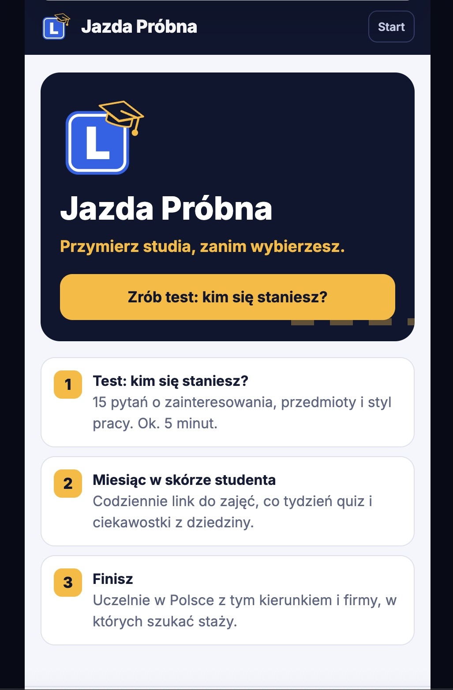

Jak działa aplikacja?
Pobierz aplikację edukacyjną i rozpocznij od krótkiego testu, który pomoże określić obszar najlepiej dopasowany do Twoich zainteresowań, predyspozycji i planów na przyszłość. Na podstawie wyniku aplikacja zaproponuje Ci kierunek studiów, ale możesz również samodzielnie wybrać dziedzinę, którą chcesz lepiej poznać.
Przez kolejny miesiąc będziesz poznawać wybrany kierunek od środka. Aplikacja poprowadzi Cię krok po kroku, dostarczając dopasowane treści, informacje, krótkie zadania i wyzwania. Dzięki temu sprawdzisz nie tylko, czego można spodziewać się na studiach, ale także jakie kompetencje są potrzebne w danej dziedzinie i jak może wyglądać późniejsza praca zawodowa.
To miesiąc praktycznego poznawania wybranego kierunku, który pomoże Ci świadomiej zdecydować, czy właśnie ta ścieżka jest dla Ciebie.
Sprawdź, co Cię interesuje
Potraktuj wyniki testów i symulacji jako punkt wyjścia do szukania kierunków, które warto lepiej poznać.
Testy zainteresowań i zadania zawodowe (3)
-
Mapa Karier
Opisy zawodów i ścieżek kariery dla młodzieży
-
My Next Move
Test zainteresowań zawodowych i opisy profesji
-
Forage
Bezpłatne symulacje zadań zawodowych w różnych branżach. To ćwiczenia online przedstawiające przykładową pracę.
EN